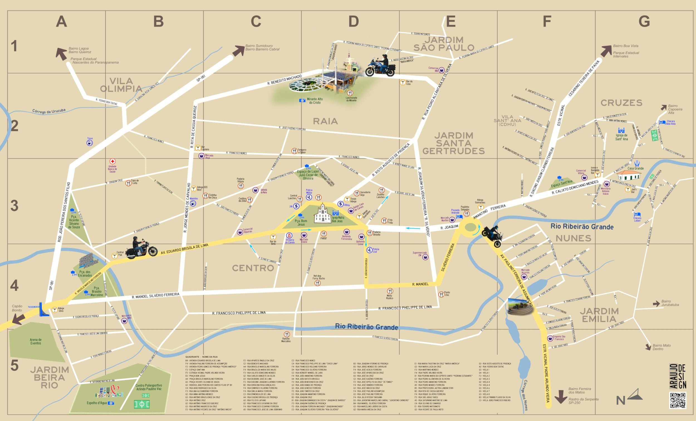

<DOCTYPE html>
<html lang="pt-br">
<head>
	<meta property="og:locale" content="pt_BR">
	<meta property="og:url" content="https://mapaderibeirao.github.io/rastro">
	<meta property="og:title" content="Ribeirão Grande - O Rastro da Serpente Passa Por Aqui">
	<meta property="og:site_name" content="Ribeirão Grande - O Rastro da Serpente Passa Por Aqui">
	<meta property="og:description" content="Descubra ecperiências inscríveis que a rota do Rastro da Serpente em Ribeirão Grande oferece para você!">
	<meta property="og:image" content="https://mapaderibeirao.github.io/rastro/img/screenshot.jpg">
	<meta property="og:image:type" content="image/jpeg">
	<meta property="og:image:width" content="1280"> 
	<meta property="og:image:height" content="720"> 
	<meta property="og:type" content="website">
	<meta name="description" content="Descubra ecperiências inscríveis que a rota do Rastro da Serpente em Ribeirão Grande oferece para você!">
    <meta charset="UTF-8" />
    <meta name="viewport" content="width=device-width, initial-scale=1, shrink-to-fit=no" />
    <meta http-equiv="x-ua-compatible" content="ie=edge" />
	
    <meta name="author" content="Edil Araujo" >
    <title>Ribeirão Grande - Conheça a Rota: O Rastro da Serpente Passa Por Aqui</title>
	<!-- Font Awesome -->
    <link rel="stylesheet" href="https://use.fontawesome.com/releases/v5.11.2/css/all.css" />
    <!-- Google Fonts Roboto -->
    <link rel="stylesheet" href="https://fonts.googleapis.com/css2?family=Roboto:wght@300;400;500;700&display=swap" />
    <!-- MDB -->
    <script type="text/javascript" src="../mdb/js/mdb.min.js"></script>
    <link rel="stylesheet" href="../mdb/css/mdb.min.css" />
    <!-- Custom styles -->
    <link rel="stylesheet" href="../css/global.css" />
	
    <script type="text/javascript" src="../js/jquery.min.js"></script>	
    <script type="text/javascript" src="../mdb/js/script.js"></script>
	<link rel="shortcut icon" href="../img/favicon.png" />	
</head>

<body class="bg-body bg-rota">
   <!--Main Navigation-->
  <header>
    <!-- Navbar -->		
    <nav class="navbar navbar-expand-sm navbar-dark d-lg-none d-xl-block texto-sombra" style="z-index: 2000;">
      <div class="container-fluid">
        <!-- Navbar brand -->
        <a class="navbar-brand nav-link"  href="../">
           <strong>Rastro Ribeirão Grande</strong>
        </a>
        <button class="navbar-toggler text-white" type="button" data-mdb-toggle="collapse" data-mdb-target="#navbarInicial"
          aria-controls="navbarInicial" aria-expanded="false" aria-label="Esconder navegação">
          <i class="fas fa-bars"></i>
        </button>
        <div class="collapse navbar-collapse" id="navbarInicial">
          <ul class="navbar-nav me-auto mb-2 mb-lg-0">
            <li class="nav-item">
              <a class="nav-link" href="../"><i class="fas fa-home"></i> <strong>Início</strong></a>
            </li>
            <li class="nav-item active"> 
              <a class="nav-link" aria-current="page" href="../mototurismo">
			  <i class="fas fa-motorcycle"></i> Mototurismo</a>
            </li>						
            <li class="nav-item">
              <a class="nav-link" href="../ribeirao-grande">
			  <i class="fas fa-map-marked-alt"></i>  A Cidade</a>
            </li>
            <li class="nav-item">
              <a class="nav-link" href="../rota">
			  <i class="fas fa-map-marked-alt"></i>  A Rota</a>
            </li>
									
          </ul>

        </div>
      </div>
    </nav>
    <!-- Navbar -->
	
  </header>
  <!--Main Navigation-->


  
  <!--Main layout-->
  <main class="mt-5">
    <div class="container">
       <!--Section: Content-->
      <section class="text-center">
		<div  class="col-lg-12 mb-4">
			<h1 class="mb-5 text-white texto-sombra"><strong>Conheça a Rota do Rastro em Ribeirão Grande</strong></h1>
			
			<div  class="text-justify card">
			<div  class="card-body text-center">
      		<p> </p>			
      		<p> </p>			
			
				<p class="">
				<iframe width="80%" height="350px" src="https://www.youtube.com/embed/fLf18lR3dtk?si=GhlJaxBJgzJbVJkJ" title="YouTube video player" frameborder="0" allow="accelerometer; autoplay; clipboard-write; encrypted-media; gyroscope; picture-in-picture; web-share" referrerpolicy="strict-origin-when-cross-origin" allowfullscreen></iframe>
				</p>
				

      		<p> </p>			
				
				<p class="text-center">
					<a href="../ribeirao-grande" class="btn btn-lg col-5 btn-primary">Conheça a Cidade <i class="fas fa-heart"></i></a>
				</p>
		

			</div>    
			</div>    
		</div>    
	  </section>
    </div>
	  

  </main>
  <!--Main layout-->  
  

  <!--Footer-->
  <footer class="bg-light text-lg-start">
    <!-- Copyright -->
    <div class="text-center p-3" style="background-color: rgba(0, 0, 0, 0.2);">       
      <a class="text-dark" href="https://mapaderibeiraograndesp.wordpress.com/">© 2025 - Araujo Design</a>
    </div>
    <!-- Copyright -->
  </footer>
  <!--Footer-->

    <!-- Custom scripts -->
    <script type="text/javascript" src="js/animatescroll.min.js"></script>
</body>
</html>
